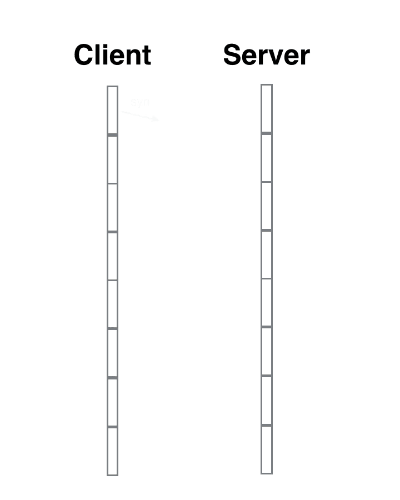
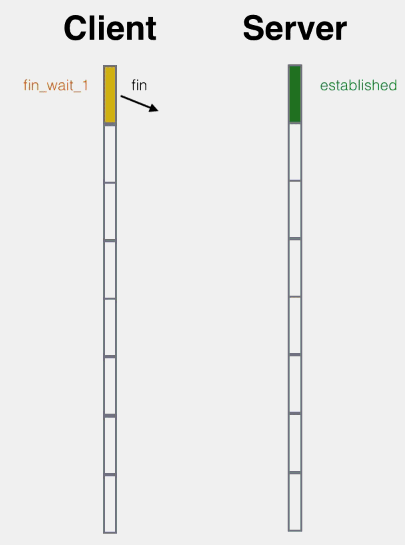

通訊協定:URL、IP與網路編程
尚硅谷JavaSE筆記-28
通訊協定
- 物理層:網路線、電話線
- 網路層:IP、ICMP、ARP
- 傳輸層:TCP、UDP
- 應用層:HTTP、FTP、DNS、Telnet
- 一般來說所謂"下層"是越靠近物理層面的那層
網路層(IP)
-
InetAddress類
- 實例化
getByName(String host):host可以是IP，也可以是域名再透過DNS找到IP- IP
- 本機:127.0.0.1或
localhost - 內部IP:192.168.0.0~192.168.255.255
- 外部IP:其他的都是
- 本機:127.0.0.1或
- 域名:www.google.com、zh.wikipedia.org…等等
- DNS:Domain Name System，負責找出對應的IP
- IP
getLocalHost():返回本地IP
- 調用
getHostName():顧名思義getHostAddress():顧名思義
- 實例化
-
port:連接埠、端口號，每個程序各自占用的通道，介於0~65536- 公認端口:0~1023，例如:http=80、ftp=21、telnet=23
- 註冊端口:1024~49151，約定成俗的，例如MySQL=3306
-
IP+port=SocketSocket才是真正實現程序間網路通信的基礎- 主動發起通信的為客戶端
Client，等待請求的為服務端Server
傳輸層
- TCP
- 可靠，連接時需進行三次握手:
- 第一次:A發給B說"B 在嗎?"
- 第二次:B收到並返回"在，我是B，請說"
- 第三次:A收到B返回的"請說"，就認為傳輸是可靠的
- 
- 適合用在大量的傳輸
- 傳輸完需釋放連接、效率低。四次揮手:
- 第一次:A發給B說"B 我們分手吧?"
- 第二次:B收到並返回"什麼?你確定?"
- 第三次:B想了一下確實該分，又返回"算了，那就分吧"
- 第四次:A收到B確定要分手，揮了揮手，沒人回應
- 
- 可靠，連接時需進行三次握手:
- UDP
- 將數據、源、目的封裝成數據包，不需要建立連接
- 數據包大小限制在64K內
- 不確認、不可靠，可以廣播發送
- 無須釋放資源，開銷小、速度快
網路編程
範例-TCP連線
實際上必須try-catch，這邊暫時用throws Exception維持代碼簡潔
client端
public void client1() throws Exception {
Socket localhost = new Socket("localhost", 8899);
OutputStream outputStream = localhost.getOutputStream();
outputStream.write("哈囉你好嗎".getBytes(StandardCharsets.UTF_8));
// 關鍵，這邊write完不shutdown，後面read方法會被阻塞
localhost.shutdownOutput();
// 接收回應，這邊複習轉換流
InputStream is = localhost.getInputStream();
InputStreamReader isr = new InputStreamReader(is);
char[] cbuf = new char[10];
int len;
while ((len = isr.read(cbuf)) != -1) {
String str = new String(cbuf, 0, len);
System.out.print(str);
}
// 關閉
isr.close();
is.close();
outputStream.close();
localhost.close();
}
- 建立
Socket實例物件，創建的同時會發起連線 - 建立連到該
Socket的流 - 通過流進行讀寫操作
- 關閉流與
Socket
server端
public void server1() throws Exception {
ServerSocket serverSocket = new ServerSocket(8899);
System.out.println("server啟動，正在監聽port:" + serverSocket.getLocalPort());
Socket s = serverSocket.accept();
System.out.println("收到請求，來自:" + s.getInetAddress());
InputStream inputStream = s.getInputStream();
// 由於要處理中文字，用好朋友ByteArrayOutputStream來裝
ByteArrayOutputStream baos = new ByteArrayOutputStream();
byte[] buf = new byte[10];
int len;
while ((len = inputStream.read(buf)) != -1) {
baos.write(buf, 0, len);
}
System.out.println(baos.toString());
// 返回訊號
OutputStream os = s.getOutputStream();
os.write("server收到訊息了，client你退下吧".getBytes(StandardCharsets.UTF_8));
// 關閉
os.close();
inputStream.close();
s.close();
serverSocket.close();
}
- 建立
ServerSocket，綁定監聽的端口 - 以
ServerSocket調用accept()方法，返回連線成功的Socket - 建立該
Socket的流 - 通過流進行讀寫操作
- 關閉流、
Socket與ServerSocket
範例-UDP連線
代碼比較簡單，就寫一起了
public class UDP {
@Test
public void sender() throws Exception {
// UDP的socket不管內容跟要發到哪
DatagramSocket socket = new DatagramSocket();
byte[] data = "麥當勞歡樂送".getBytes(StandardCharsets.UTF_8);
// 具體的Packet才指明內容跟要發給誰
DatagramPacket datagramPacket = new DatagramPacket(data, 0, data.length, InetAddress.getLocalHost(), 9090);
// 參數是發送的data、起始與終點、來源(本機)與port
socket.send(datagramPacket);
System.out.println("反正送出去了，不管有沒有人接，我先溜了");
socket.close();
}
@Test
public void receiver() throws Exception {
// UDP接收端可以在socket先聲明端口
DatagramSocket socket = new DatagramSocket(9090);
// 準備接收的容器
byte[] buf = new byte[100];
// socket已經說過地址了，這邊就只負責讀內容
DatagramPacket packet = new DatagramPacket(buf, 0, buf.length);
socket.receive(packet);
// 印出接收的內容
System.out.println(new String(packet.getData(), 0, packet.getLength()));
socket.close();
}
}
- 建立
DatagramSocket物件 - 建立
DatagramPacket物件，在此打包或拆包，具體指明內容跟地址 - 以
Socket調用send()或receive()方法，形參為Packet - 關閉
Socket
URL
-
URL(Uniform Resource Locator):統一資源定位符，它表示Internet上某一資源的地址
-
URL的基本結構由5部分組成:
-
傳輸協議://主機名:端口號/檔案名#片段名?參數列表 -
例如:
http://192.168.1.100:8080/helloworld/index.jsp#a?username=shkstart&password=123- 參數列表格式:參數名=參數值&參數名=參數值….其實就是
K-V型式
- 參數列表格式:參數名=參數值&參數名=參數值….其實就是
-
在Java中使用
URL類建立實例物件，構造器在形參輸入網址，有幾種拼接的花樣，用看的就明白不再贅述 -
一個
URL物件生成後，屬性不可再改變，有許多getXXX()方法可以獲取相關資訊 -
所謂
URI，uniform resource identifier是一個抽象的概念，其下包含:URL，結尾的locate就是指有一個具體能訪問的位置URN，uniform resource name，透過名字來標示資源，例如mailto:java-net@java.sun.com
範例-透過URL連線
URL url = new URL("http://192.168.1.100:8080/helloworld.txt"); // 只是表明網址
URLConnection urlConnection = url.openConnection(); // 試著連線看看，可能返回錯誤
urlConnection.connect(); // 真正表示"連上"這個動作
InputStream inputStream = urlConnection.getInputStream(); // 拿到流
...
- 建立
URL物件，指明要連線的地址 - 以該
URL物件調用openConnection()方法，嘗試連接，成功會返回URLConnection物件，失敗則IOException - 確定能連後，以
URLConnection物件調用connect()確實搭上線 - 調用
getInputStream( )、getOutputStream( )方法建立流 - 操作流
- 關閉流、關閉連線
小結
- IP:
InetAddress類，用getByName(String host)方法綁定IP - TCP:可靠、三次握手、效率低
- UDP:以封包為主體，管送不管收、效率高
- URL:透過網址建立URL實例物件、調用
openConnection()方法得到URLConnection物件，再實際連線、獲取流…等等
上次修改於 2021-12-13